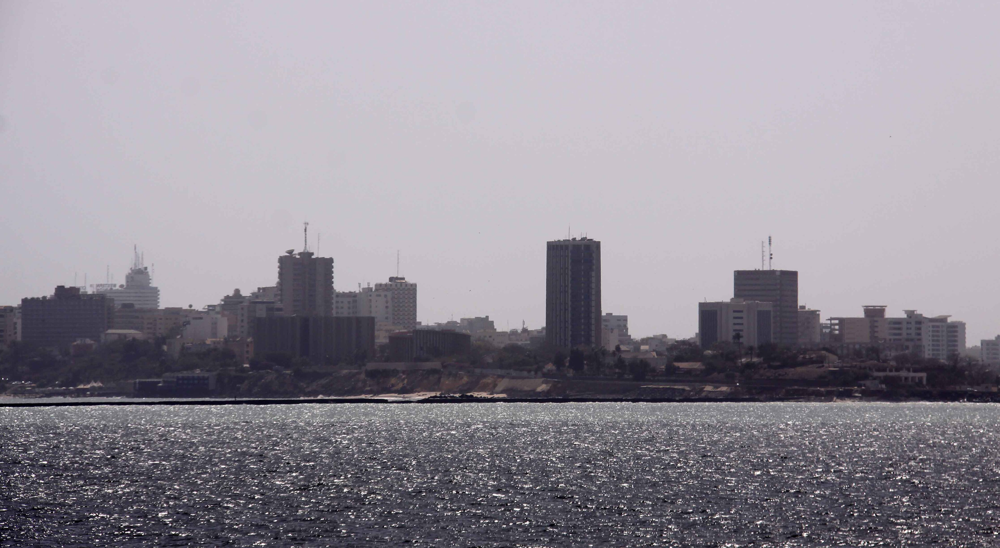

Sénégal : fracture au sommet
La destitution de Sonko par Faye fracture le projet PASTEF et reconfigure l'échiquier géopolitique ouest-africain, dans un Sahel où le terrorisme s'intensifie et où la Françafrique tente un retour par les flancs.

Quatre lignes de fracture
Le contexte politique et sécuritaire régional en quatre dimensions · 23 mai 2026
Limogeage de Sonko, dissolution du gouvernement PASTEF
Le 22 mai 2026, Faye signe le décret mettant fin aux fonctions de Sonko. L'alliance fondatrice de la rupture sénégalaise vole en éclats après 26 mois. Sonko perçu comme cherchant à s'approprier la vision présidentielle pour préparer sa propre trajectoire.
JNIM–FLA : attaques coordonnées, Kidal prise, AES fragilisé
Les 25–26 avril 2026, la coalition JNIM+FLA prend Kidal. Les mercenaires russes sont contraints à un retrait partiel. Entre janvier 2025 et avril 2026 : 3 291 civils tués dans 561 attaques au sein des pays AES (Burkina, Mali, Niger).
Boko Haram tue 23 soldats, deuil national décrété
4 et 6 mai 2026 : double attaque sur la base de Barka Tolorom. 23 soldats tchadiens tués. Mahamat Deby décrète 20 jours de deuil national. ISWAP et Boko Haram en compétition violente pour le contrôle du bassin lacustre.
La France tente un retour par trois flancs côtiers
Expulsée du Mali (2022), du Burkina (2023) et du Niger (2023), la France consolide ses positions résiduelles au Bénin, en Côte d'Ivoire et surveille le positionnement du Sénégal post-Sonko comme possible réinsertion stratégique.
Faye–Sonko : chronologie d'une rupture
De l'alliance fondatrice à la destitution brutale · 22–23 mai 2026
La destitution de Sonko ne signifie pas la fin du sonkoïsme : elle libère potentiellement Sonko du cadre institutionnel et lui confère un statut de martyr politique. Sa base, essentiellement jeune et urbaine, constitue un vecteur d'instabilité sociale à surveiller de près. Le retour aux réseaux Françafrique reste une hypothèse plausible si Faye cherche une reconnaissance diplomatique internationale rapide.
Repositionnement sénégalais
Implications pour les pays voisins et pour la dynamique AES–CEDEAO
Un pivot post-rupture vers Paris ?
Sonko était le verrou anti-Françafrique. Son départ ouvre la question d'un pragmatisme diplomatique de Faye. La visite prévue de Faye au match Sénégal–France au Mondial (16 juin) acquiert une nouvelle dimension symbolique. Les chancelleries occidentales observent.
Risque : Faye contraint de montrer son indépendance diplomatique pour ne pas paraître comme un retour à l'ordre ancien.
Méfiance accrue envers Dakar
Les juntes sahéliennes avaient vu dans le duo Faye–Sonko un allié potentiel. La destitution de Sonko, figure panafricaniste radicale, est perçue à Bamako, Ouagadougou et Niamey comme un signal négatif et une possible réintégration de Dakar dans l'orbite CEDEAO–France.
Risque : Isolement diplomatique du Sénégal dans la sous-région souverainiste. Activation de canaux de déstabilisation indirects.
Façade atlantique pro-France renforcée
Si le Sénégal rejoint le Bénin et la Côte d'Ivoire dans une posture pro-occidentale, la France reconstitue une ceinture atlantique : Dakar–Abidjan–Cotonou. Ce corridor stratégique offre à Paris une base logistique, diplomatique et économique pour contenir l'influence AES–Russie vers l'ouest.
Risque : Les pays AES perçoivent cet arc comme une menace d'encerclement, potentiellement un catalyseur de frappes terroristes sur les pays côtiers.
La fracture AES–CEDEAO s'approfondit. Le Sénégal, longtemps ambigu, pourrait désormais pencher vers le camp CEDEAO–France, fragilisant toute médiation régionale et radicalisant le positionnement des juntes du Sahel.
Sahel : escalade terroriste sans précédent
Groupes armés en coalition, AES fragilisé, expansion vers les pays côtiers · Situation au 23 mai 2026
Le Sahel central, particulièrement le tripoint Mali–Burkina–Niger, est devenu l'épicentre de la violence jihadiste mondiale. La coalition JNIM–FLA (avril 2026) a démontré une capacité opérationnelle inédite : capture de Kidal, retrait partiel des forces russes. Le 16 mai 2026, une frappe conjointe USA–Nigeria élimine Abu-Bilal al-Minuki, numéro deux global de l'État islamique, dans le bassin du Lac Tchad, signal que la région est devenue un nœud stratégique mondial du djihadisme.
Au Tchad, les attaques du 4 et 6 mai 2026 sur la base de Barka Tolorom ont tué 23 soldats. Deby décrète 20 jours de deuil. ISWAP et Boko Haram s'affrontent pour le contrôle des îles et couloirs commerciaux du lac, une guerre de territoire qui nourrit l'instabilité régionale.
Tendance critique : les groupes jihadistes adaptent leur stratégie : alliances tactiques, usage de drones et d'IED, attaques nocturnes. L'absence de coopération régionale cohérente entre AES et CEDEAO crée un vide sécuritaire que ces groupes exploitent systématiquement.
Acteurs armés actifs
Al-Qaïda au Sahel
Le plus puissant. Expansion au Nigeria via bandits locaux. Mali · Burkina · Niger · Sahel côtier.
État islamique au Grand Sahara
Trêve tacite avec JNIM, expansion Niger–Nigeria. Tripoint · Niger · Nigeria.
Province islamique en Afrique de l'Ouest
Dominant dans le bassin du Lac Tchad. Tchad · Nigeria · Cameroun.
Rebond sous Bakura Doro
Guerre de territoire avec ISWAP pour les îles du lac. Lac Tchad · Borno · Diffa.
Mouvement touareg séparatiste
Alliance opportuniste avec JNIM contre l'AES. Nord Mali.
L'arc atlantique pro-France
Après son expulsion militaire et diplomatique du Mali, du Burkina Faso et du Niger entre 2022 et 2023, la France a concentré sa présence sur les pays côtiers. Le basculement potentiel du Sénégal post-Sonko compléterait une ceinture d'encerclement stratégique autour des pays AES, perçue par ces derniers comme une stratégie de déstabilisation indirecte.
Pivot en suspens
Post-Sonko, Faye est attendu sur sa posture vis-à-vis de Paris. Présence militaire française historique à Dakar (base navale). Le Sénégal représente la façade atlantique nord, porte d'entrée vers le Sahel occidental. Bascule critique en cours.
Ancrage français consolidé
Ouattara demeure l'allié stratégique de Paris en Afrique de l'Ouest. La Côte d'Ivoire abrite 900 soldats français (4e BIMA). Frontière nord avec le Burkina Faso exposée aux infiltrations jihadistes, attaques JNIM documentées dans le nord ivoirien depuis 2021.
Front est sous pression
Le Bénin fait face à des incursions jihadistes croissantes dans le nord (parc W–Arly–Pendjari). Paris maintient une coopération sécuritaire active. Cotonou est perçu comme le verrou sud-est du dispositif français dans la région.
Si le Sénégal bascule vers une posture pro-française, les pays AES percevront l'arc Dakar–Abidjan–Cotonou comme une menace existentielle, susceptible d'accélérer les soutiens tacites ou explicites à des mouvements de déstabilisation dans ces trois pays côtiers, via proxies jihadistes ou agitation politique interne.
La stratégie de « containment » français via les pays côtiers reproduit, en négatif, la logique de l'AES : deux blocs antagonistes se faisant face, avec les jihadistes comme facteur d'instabilité profitant des deux côtés.
Matrice des risques régionaux
Probabilité estimée (horizontal) × impact potentiel (vertical). Niveau : Faible · Modéré · Élevé · Critique · Sévère.
| Impact ↓ | T. Faible | Faible | Possible | Probable | Certain |
|---|---|---|---|---|---|
| Catastrophique | R2 | ||||
| Critique | R3 | R1 | |||
| Majeur | R5 | R4 | R6 | ||
| Modéré | R8 | R7 | R9 | ||
| Mineur | R10 |
| Code | Risque | Détail |
|---|---|---|
| R1 | Escalade terroriste AES | Extension JNIM vers pays côtiers (CIV, BJ, SN) |
| R2 | Fragmentation PASTEF | Sonko crée un mouvement rival, instabilité Dakar |
| R3 | Déstabilisation Tchad | Boko Haram/ISWAP, effondrement bassin lacustre |
| R4 | Pivot pro-France Sénégal | Faye réintègre l'orbite diplomatique française |
| R5 | Rupture AES–CEDEAO totale | Fin de tout mécanisme de coopération régionale |
| R6 | Attaques sur pays côtiers | JNIM/proxies ciblent Bénin nord, CIV, Sénégal est |
| R7 | Instabilité politique Dakar | Manifestations sonkoïstes, troubles sociaux |
| R8 | Réengagement militaire France | Redéploiement partiel sous couverture bilatérale |
| R9/R10 | Reconfiguration CEDEAO | Élargissement ou repositionnement institutionnel |
Sahel en tension. Restez informés.
Le réseau SRM connecte des professionnels vérifiés de la sécurité, de l'humanitaire, de la diplomatie et de la politique à travers les Grands Lacs et l'Afrique. Rejoignez une communauté fermée et experte, construite pour le terrain.